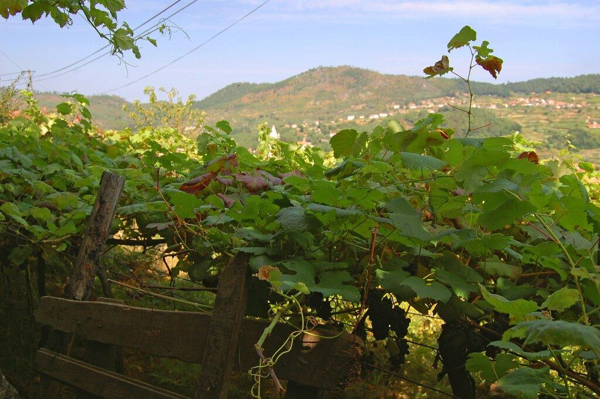

BIANCO
La regione del Vinho Verde occupa il nord-ovest verde e piovoso del Portogallo, nel Minho. È nota per i bianchi leggeri, freschi e aromatici e per gli Alvarinho di Monção e Melgaço.

Il nord-ovest del Portogallo vanta una lunga tradizione vitivinicola, e i suoi vini venivano esportati in Inghilterra già nel Medioevo. La regione del Vinho Verde fu delimitata ufficialmente nel 1908 ed è oggi una delle maggiori denominazioni del paese. Il nome non si riferisce al colore del vino, ma al suo carattere giovane e fresco, pensato per essere bevuto presto. Per lungo tempo la vite fu coltivata ai margini dei campi, arrampicata sugli alberi (vinha de enforcado) o su alte pergole (ramadas), per lasciare il terreno libero ad altre colture; oggi prevalgono le spalliere e altri sistemi di allevamento moderni.
La regione si estende tra il fiume Minho, al confine con la Galizia, e il Douro, e dalla costa atlantica fino alle montagne dell’interno. Il clima è atlantico, con piogge abbondanti, temperature miti e un paesaggio molto verde. La denominazione è suddivisa in nove sottoregioni: Monção e Melgaço, Lima, Cávado, Ave, Basto, Sousa, Baião, Paiva e Amarante. Monção e Melgaço, riparata dalle montagne, è un po’ più calda e secca, il che favorisce la maturazione dell’Alvarinho.
Prevalgono i suoli granitici, acidi, sabbiosi e poco profondi, che contribuiscono all’acidità vivace e al carattere leggero dei vini.
La regione lavora con vitigni autoctoni. Tra i bianchi spiccano l’Alvarinho (Albariño), il Loureiro, l’Arinto, qui chiamato anche Pedernã, la Trajadura (Treixadura), l’Avesso e l’Azal. Tra i rossi emerge il Vinhão, dal colore molto intenso e dall’acidità elevata. Lo stile più diffuso è un bianco giovane e leggero, di acidità marcata e gradazione moderata, talvolta leggermente frizzante. Accanto a questo esistono vini varietali più ambiziosi, soprattutto di Alvarinho e Loureiro, che possono guadagnare complessità con il tempo, oltre a rossi, rosati e spumanti. La Comissão de Viticultura da Região dos Vinhos Verdes controlla la denominazione, che tutela anche le acquaviti.
Ogni sottoregione ha le sue specialità: Monção e Melgaço è storicamente legata all’Alvarinho, la valle del Lima al Loureiro e Baião all’Avesso, mentre il Vinhão è coltivato in buona parte della regione. I bianchi si servono di solito freschi e accompagnano bene pesce, frutti di mare e la cucina tradizionale del Minho.